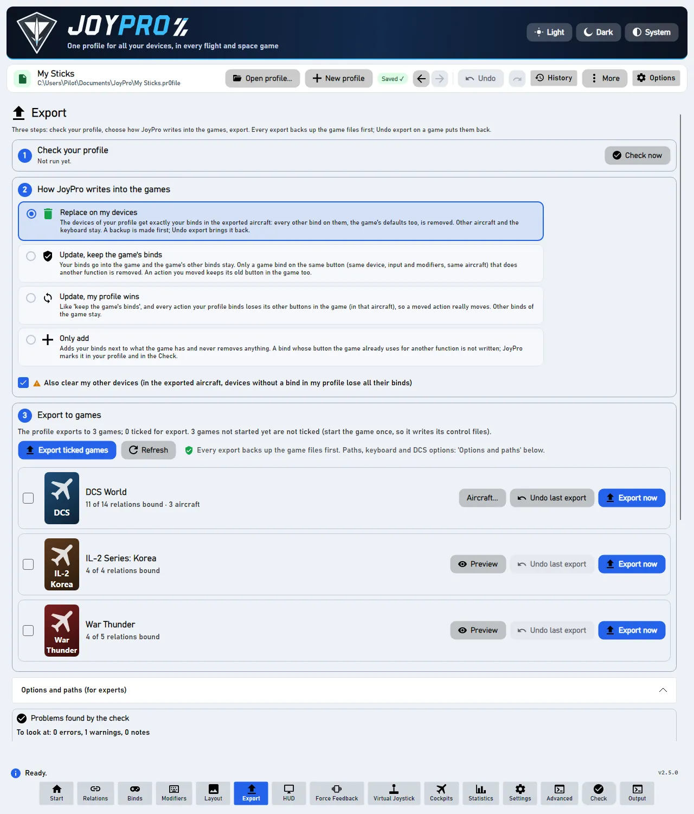
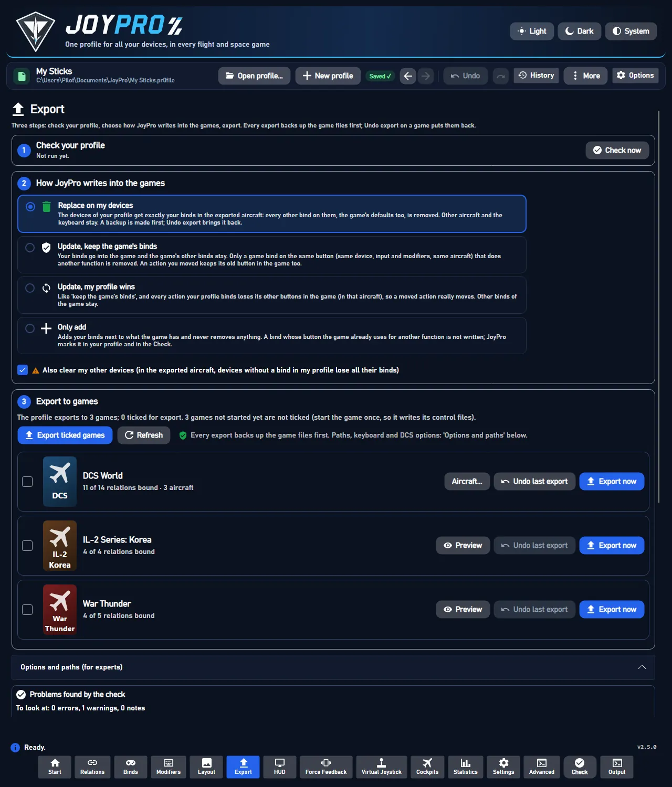

The Check looks at your profile the way the game will see it after an export, and lists what would go wrong there: a button that does two things in the same aircraft, a command that ends up on two buttons, a bind the game did not take. Every card says it in game words (the aircraft, "device · button", the command as the game calls it) and offers a fix you can undo.
Coming later: one YouTube video per topic, recorded with the English interface, with subtitles in every language JoyPro speaks.
flowchart LR
A["Check now<br/>(or Check in the bottom bar)"] --> B["engine profile validate"]
B --> C["relations duplicates<br/>relations conflicts<br/>export-marks list"]
C --> D["Cards by section:<br/>errors, warnings, notes"]
D --> E{"Fix"}
E -->|recommended| F["One engine command<br/>= one undo step"]
E -->|Open relation| G["Relation opens with the<br/>card's commands marked"]
E -->|Keep both| H["Saved in the profile,<br/>not shown again"]
#Run the Check
Press Check in the bottom bar (or Check now on the Export page). The results show on the Export page under Problems found by the check: "To look at: 0 errors, 1 warning, 0 notes".




Red cards are errors: fix them before you export, or the game will do something you did not want. Amber cards are warnings: worth a look, often fine. Notes are harmless.
#Read a card
- The title says what is wrong: "One button does two things", "Same command on two buttons", "Not written to DCS World".
- The buttons: "Throttle - HOTAS Warthog · BTN 22 ('Gear Up/Down')", the device, the button and, in brackets, your relation.
- One sentence what happens in the game: "In F-16C, both buttons do 'Display Management Switch - Down'. Usually only one of them is wanted."
- The fixes: the blue button with a tick is JoyPro's suggestion. The others are alternatives; More has the
rest. Open '
' shows the relation with exactly the card's commands marked; Back (Alt+Left) returns to the card.
Every fix can be undone with Ctrl+Z.
#Sections and fixes
Errors come first, then warnings, then notes. The search finds cards by relation, aircraft, button and command; the kind filter shows one kind; the order (By relation, By aircraft, By game, By confidence) also groups the cards.
| Section | Kind | What it means in the game | Fixes |
|---|---|---|---|
| One button does two things | error | An input is bound in two relations that both have a command of the same aircraft on: one press runs both. | Keep only 'X' on this button (the aircraft is switched off in the other relations), Keep both; More: Move 'X' to another button, Switch off all of them |
| One button runs two commands | error | One relation has two commands of the same aircraft (or game) on. | Keep only 'A', Keep both; More: Move one to another button, Switch all off |
| Other errors | error | For example a modifier button that is also a normal button. | as the card says |
| Same command on two buttons | warning | One command of an aircraft is on in two relations: the game gets it on two buttons. | Keep only on X (JoyPro's suggestion), Keep both; More: Switch it off on both |
| Copied relations | warning | An import made copies of a relation on the same button. | Merge into one; Merge all copied relations |
| Not written to the game | warning | "Only add" left a bind out because the game uses the button for something else, or the game has no free place (Elite: Primary and Secondary in use). | Export with 'Update' to replace it, Move to another button, Keep as is |
| Notes | note | Harmless, worth a look. |
- Keep both is saved in the profile: the Check does not show it again while exactly these relations have it.
- Caused by: when the profile history knows which change brought a problem, the card says so ("Caused by: Manage with AI (366 relation changes) on 21.10.2026").
- Unknown commands: a command the aircraft's current list no longer has (an old module version, a mod that is not installed) is marked "unknown command"; More offers Remove the unknown command and Find similar.
- Vehicle classes: in games without aircraft lists (War Thunder, MSFS, Arma) a plane's throttle and a helicopter's collective on one axis are no error; only actions of the same vehicle class conflict.
- One button does two things: in that aircraft, one press fires both commands (for example "Gear" and "Weapon release"). After the fix, the button does one thing there; other aircraft are unchanged.
- Same command on two buttons: both buttons do the same in that aircraft. Harmless unless you wanted the second button for something else.
- Not written to the game: the game still does its own function on that button. "Export with 'Update'" replaces it at the next export; "Keep as is" leaves the game's function and hides the card.
- Unknown command: the game would ignore that line; removing it changes nothing in the game.
#How it works inside
- GUI:
ValidateProfileCommand(bottom bar Check, Export page Check now) runsengine profile validate --fail-on-warnings false, then the duplicate and conflict reports, and builds the cards (MainWindowViewModel.CheckCards.cs,MainWindowViewModel.Duplicates.cs,Models/CheckIssueModels.cs,Views/Controls/CheckProblemsPanel.axaml). Cards are paged (5 rich, 25 light per section, Show more), and "More" and the details are built only when opened, so 3000 errors stay responsive (CheckResponsivenessTests: every step under 400 ms). - Engine:
relations conflicts(engine\EngineCheckConflicts.cs) gives validate's two errors in detail:InputConflicts(keygame:plane§device§input[§modifier]) andActionConflicts(keygame|plane|relation). Fixes:--keep <relation>,--keep-action <id>,--off,--keep-both(saved inPr0file.KeptDuplicates),--remove-actions.relations duplicatesfinds the same command on two buttons and copies;export-marks listthe binds an export left out. Each fix is one profile version (one undo step). - Text gate:
CheckTextGatefails a test when a card text shows an id, "node" or another internal word.
Engine commands: engine profile validate, engine relations conflicts, engine relations duplicates,
engine export-marks list, engine export-marks dismiss. Reference: The Check (reference).
#Related
- The Check page, every control on it
- Export, where the Check is step 1
- Build relations